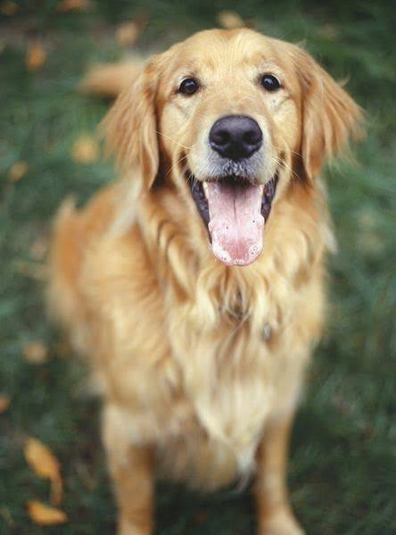
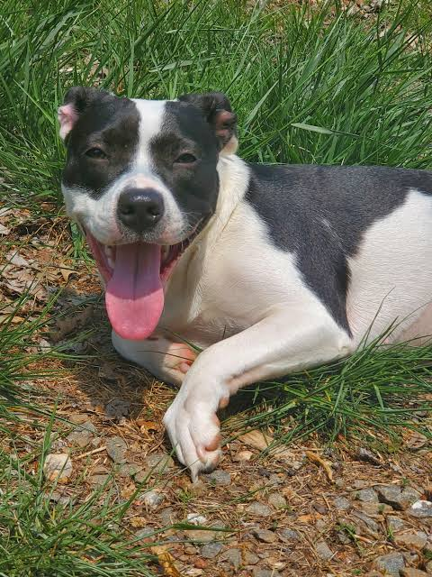
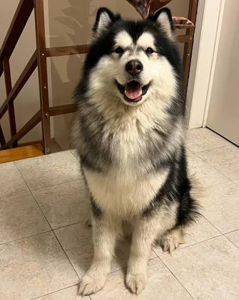
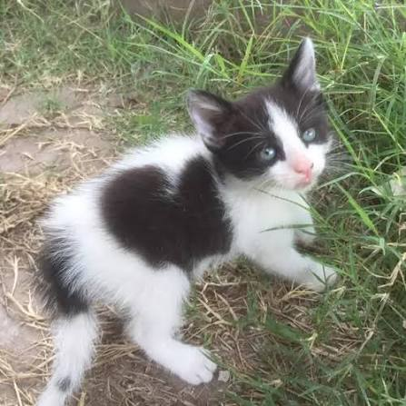
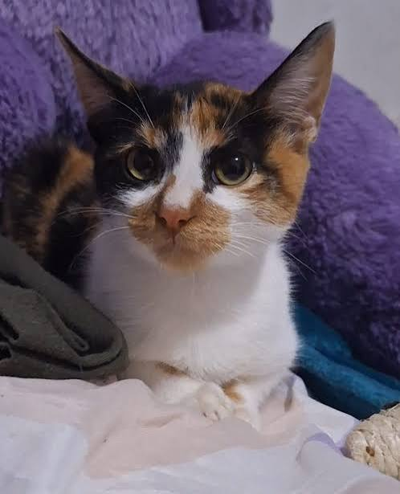
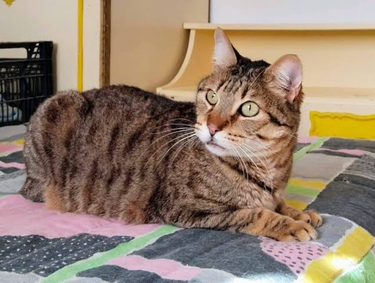

Cariñoso, jugetón y muy sociable con todos.

Tranquila, dulce y le encantan las caricias debajo de la oreja.

Activo, inteligente y muy fiel.

Tranquilo, pequeño y depende mucho de los demás. Le gusta que lo acaricien pero detesta que lo alcen.

Tímida y asustaiza. Prefiere estar con humanos que con los demás animales del refugio.

Arisco y malhumorado. A pesar de su caracter es bastante tranquilo.